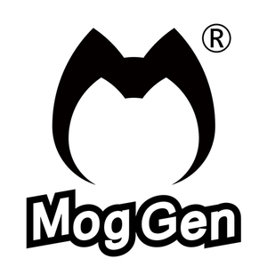

Mgo Gen
Indie Game Area http://www.mog-gen.com/
"The Journey" originated from the Chinese ink style, based on the puzzle (AVG) as the game prototype, showing the world of a Chinese ethnic minority characteristics of Chinese ink style. “Chris’ Story” is a kind of horizontal version ARPG game with a fantasy theme. Players can travel all around the game’s world by playing different professional roles